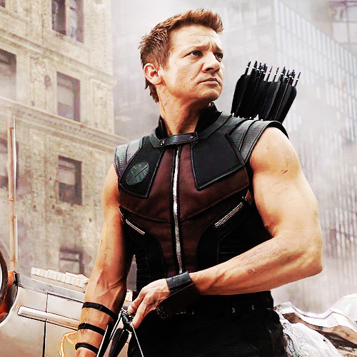

Соколиный Глаз (иногда — Хоукáй[2][3]; англ. Hawkeye), также известный как Голиаф (англ. Goliath) и Ронин (англ. Ronin), он же Клинтон Фрэнсис Бартон (англ. Clinton Francis Barton) — супергерой, появляющийся в комиксах издательства «Marvel Comics». Был создан Стэном Ли и Доном Хеком[en] и впервые появился в 57-м выпуске «Tales of Suspense», вышедшем в сентябре 1964 года. Соколиный глаз вступил в ряды Мстителей в 16-м выпуске 1-го тома «Avengers», вышедшем в мае 1965 года, и остаётся видным членом команды до сих пор.
